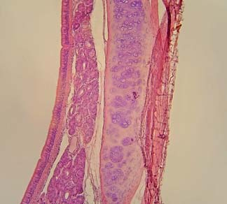

39 Estructura y función animal. Una introducción
821
CONCEPTOS CLAVE
39.1 Las células pueden formar tejidos, varios tipos de tejidos forman órganos, y los tejidos y los órganos trabajando de manera conjunta constituyen sistemas de órganos. Los tipos más importantes de tejidos que se encuentran en los animales son epiteliales, conectivos, musculares y nerviosos. 39.2 Los mecanismos homeostáticos son sobre todo sistemas de retroalimentación negativa que mantienen un ambiente interno relativamente estable. 39.3 La termorregulación es el proceso de mantener la homeostasis de la temperatura del cuerpo a pesar de cambios en la temperatura del entorno (o la interna).
L
os grupos animales son bastante diversos, con estructuras corporales radicalmente diferentes. Por ejemplo, considere cuán diferentes son el caimán y la mariposa, no sólo en tamaño sino también en forma del cuerpo y estilo de vida (vea la fotografía). A pesar de sus diferencias, los grupos animales comparten muchas características, incluyendo su tamaño relativamente grande. ¿Por qué la mayoría de los animales son más grandes que las bacterias, los protistas y los hongos? La respuesta puede estar relacionada con los nichos ecológicos , que son los papeles funcionales de una especie dentro de una comunidad. Al tiempo en que los animales evolucionaron, las bacterias, los protistas y los hongos ya ocupaban la mayoría de los nichos ecológicos disponibles. Para que las nuevas especies tuviesen éxito, fue necesario que desplazaran a otras de un nicho o se adaptaran a uno nuevo. El éxito en un nuevo nicho requirió otro plan corporal y los distintos planes corporales a menudo requirieron y se acomodaron a un mayor tamaño. El aumento de tamaño también proporcionó más oportunidad para capturar comida. Los depredadores suelen ser más grandes que sus presas. Para crecer más grandes que sus competidores bacterianos y protistas, los animales debían ser multicelulares. Recuerde que el tamaño de una simple célula está limitado por la razón de su área superfi cial (membrana plasmática) a su volumen (vea el capítulo 4). La membrana plasmática debe
Un cuerpo de mayor tamaño no signifi ca células más grandes. Las células del caimán yacaré ( Caiman yacare ) y la mariposa antorcha ( Dryas julia ) en su cabeza son aproximadamente del mismo tamaño. El caimán es más grande porque sus genes especifi can que su cuerpo consta de un mayor número de células.
Fritz Polking/Dembinsky Photo Associates

822 Capítulo 39
ser lo sufi cientemente grande con respecto al volumen de la célula para permitir el paso de materiales hacia dentro y hacia fuera de la célula, de modo que sea posible mantener las condiciones necesarias para la vida. En un animal multicelular, cada célula tiene una razón superfi cievolumen sufi cientemente grande para regular con efi cacia su ambiente interno. Las células individuales viven y mueren, y son sustituidas mientras el organismo continúa manteniéndose a sí mismo y prosperando. El principal responsable del tamaño de un animal es el número de células, no los tamaños individuales de éstas. En organismos unicelulares, como bacterias y muchos protistas, la simple célula lleva a cabo todas las actividades necesarias para la vida. Recuerde que los organismos unicelulares son pequeños y planos, y que dependen de la difusión para muchos procesos de la vida, incluyendo el intercambio de gases y la eliminación de desechos metabólicos. Una razón por la cual pueden ser pequeños es que no requieren sistemas de órganos complicados. Este capítulo se centra en la forma y función básicas del cuerpo animal. La anatomía es el estudio de la estructura de un organismo. La fi siología es el estudio de cómo funciona el cuerpo. La estructura y la función están estrechamente relacionadas en todos los niveles de organización. Se describen los tipos y las funciones de los tejidos, así como los sistemas de órganos principales de los animales. También se analiza el importante concepto de homeostasis , usando como ejemplo la regulación de la temperatura del cuerpo. En los capítulos siguientes se estudiará cómo los sistemas de órganos funcionan juntos para mantener la homeostasis, a medida que el animal lleva a cabo sus muchos procesos de vida.
39.1 TEJIDOS, ÓRGANOS Y SISTEMAS DE ÓRGANOS
OBJETIVOS DE APRENDIZAJE
1 Comparar la estructura y la función de los cuatro tipos principales de tejidos animales: epitelial, conectivo, muscular y nervioso. 2 Comparar los tipos principales de tejido epitelial y describir sus funciones. 3 Comparar los tipos principales de tejido conectivo y describir sus funciones. 4 Contrastar los tres tipos de tejido muscular y describir sus funciones. 5 Relacionar la estructura de la neurona con su función. 6 Describir brevemente los sistemas de órganos de un mamífero y resumir las funciones de cada sistema de órganos.
En un organismo multicelular las células se especializan para realizar tareas específi cas. Recuerde del capítulo 1 que las células se organizan para formar tejidos y que éstos se asocian para formar órganos, como el corazón o el estómago. Grupos de tejidos y órganos forman los sistemas de órganos de un organismo complejo. Miles de millones de células pueden estar organizadas para formar los tejidos, órganos y sistemas de órganos de un animal complejo. Un tejido consta de un grupo de células semejantes estrechamente relacionadas que llevan a cabo funciones específi cas. Los biólogos clasifi can los tejidos animales en epitelial, conectivo, muscular o nervioso. La clasifi cación de los tejidos depende de su estructura y organización. Cada tipo de tejido está compuesto de células con tamaños, formas y disposiciones características; y cada tipo de tejido está especializado para realizar una función específi ca o un grupo de funciones específi cas. Por ejemplo, algunos tejidos están especializados para transportar ma-
teria, mientras que otros se contraen, permitiendo que los animales se muevan. Y otros secretan hormonas que regulan procesos metabólicos. La estructura y la función están estrechamente relacionadas en todos los niveles de organización. A medida que estudie cada tipo de tejido, observe la relación entre su forma y su función.
Los tejidos epiteliales cubren el cuerpo y revisten sus cavidades
El tejido epitelial (también denominado epitelio ) consta de células estrechamente ajustadas entre sí para formar una capa o una lámina continua de células. Una superfi cie de la lámina suele estar expuesta porque cubre el cuerpo (capa externa de la piel) o reviste una cavidad, como el lumen (la cavidad en un órgano hueco) del intestino. La otra superfi cie de una capa epitelial se adhiere al tejido subyacente por medio de una membrana basal no celular que consta de fi bras diminutas y material polisacárido inerte producido por las células epiteliales. El tejido epitelial constituye la capa externa de la piel y los revestimientos de los tractos digestivo, respiratorio, excretor y reproductivo. Como resultado, todo lo que entra o sale del cuerpo debe cruzar por lo menos una capa de epitelio. El alimento ingerido por la boca y tragado no está realmente “dentro” del cuerpo sino hasta que es absorbido a través del epitelio del intestino y entra en la sangre. En gran medida, las permeabilidades de los diversos tejidos epiteliales regulan el intercambio de sustancias entre las diferentes partes del cuerpo, así como entre el animal y el ambiente externo. Los tejidos epiteliales llevan a cabo muchas funciones, incluyendo protección, absorción, secreción y sensación. La capa epitelial de la piel, la epidermis , cubre todo el cuerpo y lo protege de lesiones mecánicas, productos químicos, bacterias y pérdida de fl uidos. El tejido epitelial que reviste el tracto digestivo absorbe nutrientes y agua hacia el cuerpo. Algunas células epiteliales forman glándulas que secretan productos celulares como hormonas, enzimas o sudor. Otras células epiteliales son receptores sensoriales que captan información del entorno. Por ejemplo, las células epiteliales en las papilas gustativas y en la nariz se especializan como receptores químicos. La TABLA 39-1 ilustra los tipos principales de tejido epitelial, indica sus ubicaciones en el cuerpo y describe sus funciones (páginas 824825). Con base en la forma, es posible distinguir tres tipos de células epiteliales. Las células epiteliales escamosas son delgadas y planas con forma de losas. Las células epiteliales cuboidales son cilindros cortos que vistas lateralmente parecen formas cúbicas, como dados. En realidad, cada célula cúbica es típicamente hexagonal en sección transversal, por lo que es un poliedro de ocho lados. Las células epiteliales columnares parecen columnas o cilindros cuando se ven desde un lado. El núcleo suele estar localizado cerca de la base de la célula. Cuando se ven desde arriba o en sección transversal, estas células a menudo parecen hexagonales. Sobre su superfi cie libre, una célula epitelial columnar puede tener cilios que se mueven de manera coordinada, desplazando materia sobre la superfi cie del tejido. La mayor parte del tracto respiratorio superior está revestido con epitelio columnar ciliado que aleja de los pulmones partículas y otras materias extrañas. El tejido epitelial también se clasifi ca por número de capas. El epitelio simple está compuesto por una capa de células. Suele ubicarse donde las sustancias son secretadas, excretadas o absorbidas, o donde la materia se difunde entre compartimentos. Por ejemplo, el epitelio escamoso simple reviste las bolsas de aire en los pulmones. La estructura de este tejido delgado permite la difusión de gases hacia dentro y hacia fuera de las bolsas de aire. El epitelio estratifi cado , que consta de dos o más capas, protege los tejidos subyacentes. Por ejemplo, el epitelio estratifi cado escamoso, que
Estructura y función animal. Una introducción 823
de cada tipo de tejido conectivo están determinadas parcialmente por la estructura y las propiedades de la sustancia intercelular. El tejido conectivo suele contener tres tipos de fi bras: de colágeno, elásticas y reticulares. Las fi bras de colágeno , el tipo más numeroso, están hechas de colágenos , un grupo de proteínas fi brosas encontradas en animales (vea la fi gura 3-22b). Los colágenos son las proteínas más abundantes en los mamíferos, representan alrededor de 25% de su masa proteínica total. El colágeno es muy duro (la carne es dura debido a su contenido de colágeno). La resistencia a la tensión (capacidad de estirarse sin romperse) de las fi bras de colágeno es comparable a la del acero. Las fi bras de colágeno son onduladas y fl exibles, lo que les permite permanecer intactas cuando el tejido se estira. Las fi bras elásticas se ramifi can y unen para formar redes. Pueden estirarse por la aplicación de una fuerza y luego (como una banda elástica estirada) volver a su tamaño y forma originales cuando se retira la fuerza. Las fi bras elásticas compuestas por la proteína elastina son un componente importante de las estructuras que deben estirarse. Las fi bras reticulares son muy delgadas, ramifi cadas y forman redes delicadas que unen tejidos conectivos con tejidos vecinos. Las fi bras reticulares constan de colágeno y algo de glicoproteína. Las células de varios tipos de tejidos conectivos difi eren en forma y estructura, y en los tipos de fi bras y matrices que secretan. Los fi broblas-
constituye la capa externa de la piel, se deshace de manera continua durante el uso y desgaste normal. También debe regenerarse de manera continua. Las células del epitelio pseudoestratifi cado falsamente parecen formar capas. Aunque todas sus células están sobre una membrana basal, no todas se extienden hacia la superfi cie expuesta del tejido. Este arreglo da la impresión de dos o más capas celulares. Algunas de las vías respiratorias están revestidas con epitelio pseudoestratifi cado equipado con cilios. El revestimiento de los vasos sanguíneos y linfáticos se denomina endotelio. Las células endoteliales tienen diferente origen embrionario del epitelio “verdadero”. Sin embargo, estas células son semejantes en estructura a las células epiteliales escamosas y pueden ser incluidas en esa categoría.
Las glándulas están compuestas de células epiteliales
Una glándula consta de dos o más células epiteliales especializadas en secretar un producto como sudor, leche, moco, cera, saliva, hormonas o enzimas ( FIGURA 39-1 ). El tejido epitelial que reviste las cavidades y vías del cuerpo suele tener algunas células especializadas que secretan moco denominadas células caliciformes . La mucosidad lubrica estas superfi cies, ofrece protección y facilita el movimiento de materia. Las glándulas se clasifi can como exocrinas o endocrinas. Las glándulas exocrinas , como las células caliciformes y las sudoríparas, secretan sus productos sobre una superfi cie epitelial libre, típicamente a través de un conducto (tubo). Las glándulas endocrinas carecen de ductos y liberan sus productos, denominados hormonas , en el fl uido intersticial (líquido en los tejidos) o en la sangre; las hormonas suelen ser transportadas por el sistema cardiovascular. (Las glándulas endocrinas se analizan en el capítulo 50).
Las células epiteliales forman membranas
Una membrana epitelial consta de una hoja de tejido epitelial y una capa de tejido conectivo subyacente. Entre los tipos de membranas epiteliales se incluyen las mucosas y las serosas. Una membrana mucosa , o mucosa, reviste una cavidad del cuerpo que se abre hacia el exterior del cuerpo, como el tracto digestivo o respiratorio. Las células caliciformes en la capa epitelial secretan moco que lubrica el tejido y lo protege de la desecación. Una membrana serosa reviste una cavidad del cuerpo que no se abre hacia el exterior del cuerpo. Consta de un epitelio escamoso simple sobre una capa delgada de tejido conectivo laxo. Este tipo de membrana secreta fl uido hacia la cavidad que reviste. Ejemplos de membranas serosas son las membranas pleurales que revisten las cavidades pleurales alrededor de los pulmones y las membranas pericárdicas que recubren la cavidad pericárdica alrededor del corazón.
Los tejidos conectivos soportan otras estructuras del cuerpo
Casi todos los órganos del cuerpo tienen un armazón de tejido conectivo que los soporta y amortigua. En comparación con los tejidos epiteliales, los tejidos conectivos contienen relativamente pocas células que están incrustadas en una sustancia intercelular amplia que consta de fi bras fi liformes microscópicas dispersas a lo largo de una matriz , un gel delgado de polisacáridos que secretan las células. La naturaleza y función
Cilios Glándulas unicelulares (células caliciformes)
Membrana basal
Piel
Células caliciformes. Estas glándulas unicelulares secretan moco.
Glándula sudorípara. Estas glándulas simples constan de tubos en espiral. Sus paredes están construidas de epitelio cuboidal simple.
Glándula salival parótida. Glándulas compuestas, como la parótida, tienen conductos ramificados.
FIGURA 39-1 Glándulas Una glándula consta de una o más células epiteliales.

824 Capítulo 39
Tejidos epiteliales
25 μ m
Núcleos de células epiteliales escamosas
Ed Reschke
Micrografía de epitelio escamoso simple.
Epitelio escamoso simple
Ubicaciones principales Bolsas de aire de los pulmones; revestimiento de vasos sanguíneos
Funciones Pasaje de materiales donde se requiere poca o ninguna protección y donde la difusión es la forma principal de transporte
Descripción y comentarios Las células son planas y están dispuestas en una capa simple
25 μ m
Núcleos de células epiteliales cuboidales Lumen de túbulo
Ed Reschke
Micrografía de epitelio cuboidal simple.
Epitelio cuboidal simple
Ubicaciones principales Revestimiento de los túbulos renales, conductos de las glándulas
Funciones Secreción y absorción
Descripción y comentarios Capa simple de células; la micrografía muestra la sección transversal a través de los túbulos; de lado cada célula se ve como un cilindro corto; algunas cuentan con microvellosidades para absorción
25 μ m
Núcleos de células columnares Célula caliciforme
Ed Reschke
Micrografía de epitelio columnar simple.
Epitelio columnar simple
Ubicaciones principales Revestimientos de gran parte del tracto digestivo y la parte superior del tracto respiratorio
Funciones Secreción, especialmente de moco, absorción, protección, mueve la capa de moco
Descripción y comentarios Capa simple de células columnares, algunas veces con vesículas secretoras encerradas (en células caliciformes); complejo de Golgi altamente desarrollado, a menudo ciliado
( continúa )
TABLA 39-1
Estructura y función animal. Una introducción 825
Algunos de los tejidos conectivos principales son (1) tejidos conectivos laxo y denso, (2) tejido conectivo elástico, (3) tejido conectivo reticular, (4) tejido adiposo, (5) cartílago, (6) hueso y (7) sangre, linfa y tejidos que producen células sanguíneas. Estos tejidos varían bastante en sus detalles estructurales y en las funciones que realizan ( TABLA 39-2 ). El tejido conectivo más ampliamente distribuido en el cuerpo vertebrado es el tejido conectivo laxo . Junto con el tejido adiposo forma la capa subcutánea (por debajo de la piel) que fi ja la piel a los músculos y otras estructuras subyacentes. Los nervios, vasos sanguíneos y múscu-
tos son células de tejido conectivo que producen las fi bras, así como las proteínas e hidratos de carbono complejos de la matriz. Los fi broblastos liberan componentes proteínicos que asumen una disposición para formar las fi bras características. Estas células son especialmente activas en el desarrollo de tejidos y son importantes para sanar heridas. A medida que los tejidos maduran, el número de fi broblastos disminuye y se vuelven menos activos. Los macrófagos , las células carroñeras del cuerpo, suelen circular a través de los tejidos conectivos limpiando restos celulares y engullendo sustancias extrañas, incluidas bacterias.
Tejidos epiteliales (continuación)
50 μ m
Ed Reschke
Micrografía de epitelio escamoso estratifi cado.
Epitelio escamoso estratifi cado
Ubicaciones principales Piel, revestimiento bucal, revestimiento vaginal
Funciones Sólo protección, poca o ninguna absorción o tránsito de materiales, la capa exterior se desprende continuamente y se sustituye desde abajo
Descripción y comentarios Varias capas de células, con sólo las inferiores columnares y metabólicamente activas; la división de las células inferiores ocasiona que las más antiguas sean empujadas hacia arriba en dirección a la superfi cie, volviéndose más planas a medida que se mueven
Cilios
Células epiteliales
Membrana basal
25 μ m
Núcleos
Micrografía de epitelio columnar pseudoestratificado, ciliado.
© Jubal Harshaw/Shutterstock
Micrografía de epitelio columnar pseudoestratifi cado, ciliado.
Epitelio pseudoestratifi cado
Ubicaciones principales Algunas vías respiratorias, conductos de muchas glándulas
Funciones Secreción, protección, mueve la capa de moco
Descripción y comentarios Ciliado, secreta moco, o con microvellosidades; comparable en muchas formas con el epitelio columnar, excepto que no todas las células son de la misma altura; así, aunque todas las células están en contacto con la misma membrana basal, el tejido parece estratifi cado
TABLA 39-1
826 Capítulo 39
Tejidos conectivos
50 μ m
Fibras de colágeno Núcleos de fibroblastos
Fibras elásticas
Ed Reschke
Micrografía de tejido conectivo laxo.
Tejido conectivo laxo
Ubicaciones principales En todas partes donde es necesario combinar sostén con elasticidad, como el tejido subcutáneo (la capa de tejido debajo de la dermis de la piel)
Funciones Sostén, depósito de fl uidos y sales
Descripción y comentarios Fibras producidas por fi broblastos celulares incrustadas en una matriz semifl uida y mezcladas con varias otras células
Fibras de colágeno
Núcleo de fibroblasto
25 μ m
Ed Reschke
Micrografía de tejido conectivo denso.
Tejido conectivo denso
Ubicaciones principales Tendones, muchos ligamentos, dermis de la piel
Funciones Sostén, transmite fuerzas mecánicas
Descripción y comentarios Las fi bras de colágeno pueden estar dispuestas de manera regular o irregular
Fibras elásticas
50 μ m
Ed Reschke
Micrografía de tejido conectivo elástico.
Tejido conectivo elástico
Ubicaciones principales Estructuras que deben expandirse y volver a su tamaño original, como tejido pulmonar y arterias grandes
Función Confi ere elasticidad
Descripción y comentarios Fibras elásticas ramifi cadas intercaladas con fi broblastos
Fibras reticulares
50 μ m
Ed Reschke
Micrografía de tejido conectivo reticular.
Tejido conectivo reticular
Ubicaciones principales Armazón del hígado, ganglios linfáticos, bazo
Función Sostén
Descripción y comentarios Consta de fi bras reticulares entrelazadas
( continúa )
TABLA 39-2
Estructura y función animal. Una introducción 827
Tejidos conectivos (continuación)
50 μ m
Cengage
Micrografía de tejido adiposo.
Tejido adiposo
Ubicaciones principales Capa subcutánea, almohadillas alrededor de ciertos órganos internos
Funciones Almacenamiento de alimentos, aislamiento, sostén de órganos como las glándulas mamarias, los riñones
Descripción y comentarios Las células de grasa tienen forma de estrella al principio, se acumulan gotitas de grasa hasta que se producen las células típicas en forma de anillo
50 μ m
Condrocitos
Laguna
Sustancia intercelular
Micrografía de cartílago.
Cartílago
Ubicaciones principales Esqueletos de soporte de tiburones y rayas, extremos de los huesos de los mamíferos y otros vertebrados, anillos de sostén en las paredes de algunos tubos respiratorios; punta de la nariz, oído externo
Funciones Sostén fl exible
Descripción y comentarios Células (condrocitos) separadas entre sí por sustancia intercelular; las células ocupan lagunas
50 μ m
Lagunas Canal haversiano Matriz
Cengage
Micrografía de hueso.
Hueso
Ubicaciones principales
Forma la estructura esquelética en la mayoría de los vertebrados
Funciones
Soporta y protege órganos internos, depósito de calcio, músculos esqueléticos unidos a huesos
Descripción y comentarios
Osteocitos en lagunas, en el hueso compacto, lagunas incrustadas en laminillas, círculos concéntricos de la matriz que rodea los canales haversianos
25 μ m
Glóbulos rojos Glóbulos blancos
Ed Reschke
Micrografía de sangre.
Sangre
Ubicaciones principales Dentro del corazón y vasos sanguíneos del sistema circulatorio
Funciones Transporta oxígeno, nutrientes, desperdicios y otros materiales
Descripción y comentarios Consta de células dispersas en sustancia intercelular fl uida (plasma)
TABLA 39-2
© Jubal Harshaw/Shutterstock


828 Capítulo 39
médula . La médula amarilla consta principalmente de grasa. La médula roja es el tejido conectivo donde se producen las células de la sangre. El hueso se estudia con mayor detalle en el capítulo 40. La sangre y la linfa son tejidos circulantes que ayudan a otras partes del cuerpo a comunicarse e interactuar. Lo mismo que otros tejidos conectivos, constan de células especializadas dispersas en una sustancia intercelular. En los mamíferos, la sangre está constituida de glóbulos rojos , glóbulos blancos y plaquetas , todos suspendidos en plasma, la parte líquida no celular de la sangre. En humanos y otros vertebrados, los glóbulos rojos contienen el pigmento respiratorio que transporta oxígeno. Los glóbulos blancos defi enden al cuerpo en contra de microorganismos causantes de enfermedades (vea el capítulo 45). Las plaquetas, pequeños fragmentos desprendidos de células grandes en la médula ósea, desempeñan un papel crucial en la coagulación sanguínea. El plasma consta de agua, proteínas, sales y una variedad de mensajeros químicos solubles, como las hormonas, que transporta de una parte del cuerpo a otra. La sangre se estudiará en el capítulo 44.
El tejido muscular está especializado para contraerse
La mayoría de los animales se mueven al contraer las largas células cilíndricas en forma de huso de tejido muscular . Las células musculares se denominan fi bras musculares debido a su longitud. Cada fi bra muscular contiene muchas unidades contráctiles paralelas longitudinales delgadas denominadas miofi brillas . Dos proteínas, la miosina y la actina , son los componentes principales de las miofi brillas. La miosina y la actina desempeñan un papel importante en la contracción de las fi bras musculares. Muchos invertebrados tienen esqueleto y músculos lisos. Los vertebrados tienen tres tipos de tejido muscular: esquelético, cardiaco y liso ( TABLA 39-3 en la página 830). El músculo esquelético constituye las grandes masas musculares unidas a los huesos del cuerpo. Las fi bras musculares esqueléticas son muy largas y cada fi bra tiene muchos núcleos. Los núcleos de las fi bras musculares esqueléticas también son excepcionales en su posición. Se colocan justo bajo la membrana plasmática, lo cual libera toda la parte central de la fi bra muscular esquelética para las miofi brillas. Esta adaptación parece aumentar la efi cacia de contracción. Cuando los músculos esqueléticos se contraen, mueven partes del cuerpo. Aunque las fi bras musculares esqueléticas suelen estar bajo control voluntario, normalmente las personas no contraen de manera voluntaria las fi bras musculares cardiaca y lisa. El microscopio óptico muestra que tanto las fi bras esqueléticas como las cardiacas tienen bandas transversales alternadas claras y oscuras, o estrías , que cambian sus tamaños relativos durante contracciones. Las fi bras musculares estriadas se contraen rápidamente, pero no pueden permanecer en ese estado durante mucho tiempo. Deben relajarse y descansar un momento antes de volver a contraerse. (Las contracciones musculares se estudian en el capítulo 40). El músculo cardiaco es el tejido principal del corazón. Cuando el músculo cardiaco se contrae, el corazón bombea la sangre. Las fi bras del músculo cardiaco se unen extremo con extremo, se ramifi can y vuelven a unirse para formar redes complejas. En el interior de cada fi bra hay uno o dos núcleos. Un rasgo característico del tejido muscular cardiaco es la presencia de discos intercalados , uniones especializadas donde se unen las fi bras. El músculo liso está presente en las paredes del tracto digestivo, el útero, vasos sanguíneos y muchos órganos internos. La contracción del músculo liso es necesaria para que estos órganos lleven a cabo ciertas funciones. Por ejemplo, la contracción del músculo liso en la pared del tracto digestivo mueve el alimento a través de dicho tracto. Cuando el músculo liso en las paredes de las arteriolas (arterias pequeñas) se con-
los están envueltos en tejido conectivo laxo. Este tejido también forma un relleno delgado entre las partes del cuerpo y sirve como depósito de fl uidos y sales. El tejido conectivo laxo consta de fi bras que van en todas las direcciones a través de una matriz semifl uida. Su fl exibilidad permite que las partes se conecten para moverse. El tejido conectivo denso , que se encuentra en la dermis (capa inferior) de la piel, es muy fuerte, pero algo menos fl exible que el tejido conectivo laxo. Predominan las fi bras de colágeno. Los tendones , las cuerdas que unen los músculos con los huesos, y los ligamentos , los cables que unen los huesos entre sí, constan de tejido conectivo denso en el que los haces de colágeno están dispuestos en un patrón defi nido. El tejido conectivo elástico consta principalmente de haces de fi bras elásticas paralelas. Este tejido se encuentra en estructuras que deben expandirse y luego volver a su tamaño original, como el tejido pulmonar y las paredes de arterias grandes. El tejido conectivo reticular está compuesto principalmente de fi bras reticulares entrelazadas. Forma un armazón interno que sostiene muchos órganos, incluyendo el hígado, el bazo y los ganglios linfáticos. Las células de tejido adiposo almacenan grasa y la liberan cuando se requiere combustible para la respiración celular. El tejido adiposo se encuentra en la capa subcutánea y en la piel que amortigua órganos internos. El esqueleto de soporte de un vertebrado está hecho de cartílago, o de cartílago y hueso. El cartílago es el esqueleto de soporte en las etapas embrionarias de todos los vertebrados. En la mayoría de los vertebrados, el hueso sustituye al cartílago durante el desarrollo. No obstante, el cartílago permanece en algunas estructuras de soporte. Por ejemplo, en humanos, el cartílago se encuentra en el oído externo, los anillos de sostén en las paredes de las vías respiratorias, la punta de la nariz, los extremos de algunos huesos y en los discos que sirven como cojines entre las vértebras. El cartílago es fi rme pero elástico. Sus células, denominadas condrocitos , secretan una matriz dura y gomosa que los rodea. También secretan fi bras de colágeno que se incrustan en la matriz y la fortalecen. Los condrocitos terminan por ponerse, de manera individual o en grupos de tres o cuatro, en pequeñas cavidades en la matriz, denominadas lagunas . Estas células permanecen vivas y son alimentadas por nutrientes y oxígeno que se difunden a través de la matriz. El tejido cartilaginoso carece de nervios, vasos linfáticos y vasos sanguíneos. El hueso , el tejido más importante del esqueleto vertebrado, es como el cartílago en cuanto a que consta principalmente de material de matriz. Las células óseas, denominadas osteocitos , están contenidas en la laguna. Los osteocitos secretan y mantienen la matriz ( FIGURA 39-2 ). No obstante, a diferencia del cartílago, el hueso es un tejido altamente vascular, con un suministro importante de sangre. Los osteocitos se comunican entre sí y con capilaridades por medio de canales delgados ( canalículos ) que contienen largas extensiones citoplasmáticas de los osteocitos. Un hueso típico tiene una capa externa de hueso compacto que rodea un relleno de hueso esponjoso . El hueso compacto consta de unidades con forma de huso llamadas osteonas . Dentro de cada osteona, los osteocitos están dispuestos en capas concéntricas de matriz denominadas laminillas . A su vez, las laminillas rodean canales microscópicos centrales conocidos como canales haversianos , por los que pasan capilaridades y nervios. Los huesos son extraordinariamente ligeros y fuertes. Sales de calcio del hueso hacen que la matriz sea muy dura y el colágeno evita que la matriz ósea sea demasiado frágil. La mayoría de los huesos tienen una gran cavidad medular central que contiene un tejido esponjoso denominado
Estructura y función animal. Una introducción 829
sostienen y nutren a las neuronas, destruyen agentes patógenos y modulan la transmisión de impulsos ( FIGURA 39-3 ). Una neurona típica tiene un cuerpo celular que contiene al núcleo y dos tipos de extensiones citoplasmáticas (las cuales se analizan en el capítulo 41). Las dendritas son extensiones citoplasmáticas especializadas para recibir señales y transmitirlas al cuerpo celular. El simple axón transmite señales, denominadas impulsos nerviosos , lejos del cuerpo celular. Las longitudes de los axones varían desde 1 o 2 mm
trae, los vasos sanguíneos se contraen, elevando la presión arterial. Cada músculo liso en forma de huso contiene un solo núcleo central.
El tejido nervioso controla los músculos y las glándulas
El tejido nervioso consta de neuronas y células gliales. Las neuronas están especializadas para recibir y transmitir señales. Las células gliales
Los vasos sanguíneos y los nervios corren a través del canal haversiano dentro de cada osteona de hueso compacto.
El esqueleto consta principalmente de huesos. (b) Un hueso cortado para exponer su estructura interna. Hueso esponjoso Hueso compacto Vaso sanguíneo Canal haversiano
Laguna Extensiones citoplasmáticas
Osteona
Matriz
Extensiones citoplasmáticas Osteocito
- La matriz ósea es rígida y dura. Los osteocitos quedan atrapados dentro de las lagunas, pero se comunican entre sí por medio de extensiones citoplasmáticas que se extienden a través de canales diminutos.
FIGURA 39-2 Animada Hueso
830 Capítulo 39
Este capítulo se ha centrado en tejidos normales. Para un análisis de algunos tejidos anormales, vea Preguntas acerca de: Tejidos no deseados. Tipos de cáncer
Los tejidos y los órganos forman los sistemas de órganos del cuerpo
Los tejidos se asocian para formar órganos . Aunque un órgano animal puede estar compuesto principalmente por un tipo de tejido, se requiere de otros tipos para sostener, proteger, proporcionar suministro de sangre y transmitir información. Por ejemplo, el corazón es en esencia tejido muscular cardiaco, pero sus cámaras están revestidas con endotelio y sus paredes contienen vasos sanguíneos hechos de endotelio, músculo liso y tejido conectivo. El corazón también tiene nervios que transmiten información y ayudan a regular el ritmo y la intensidad de sus contracciones. Un grupo organizado de tejidos y órganos que llevan a cabo un conjunto especializado de funciones forman un sistema de órganos . Al trabajar juntos en una manera bastante coordinada, los sistemas de órganos efectúan las funciones requeridas por el organismo . Es posible identifi car 11 sistemas de órganos principales que trabajan juntos para realizar los procesos fi siológicos de un mamífero: integumentario , óseo , muscular , digestivo , cardiovascular , inmunológico ( linfático ), respiratorio , urinario , nervioso , endocrino y reproductivo . La FIGURA 39-4 resume los principales órganos y funciones de cada órgano o sistema.
Repaso
■ ¿Cuáles son las diferencias principales en estructura y función entre el tejido epitelial y el tejido conectivo?
■ ¿Qué tipo de tejido rellena las bolsas de aire de los pulmones? ¿Cómo está adaptada su estructura a su función?
■ ¿Cuáles son algunas diferencias entre los tres tipos de tejido muscular? ¿Cómo está adaptada la estructura de cada tipo para su función?
■ ¿Cuáles son las funciones principales de cada uno de los siguientes tres sistemas de órganos? (1) Respiratorio, (2) Urinario y (3) Endocrino. (Consulte la fi gura 39-4 para ayuda).
hasta más de un metro. Por ejemplo, los que van desde la médula espinal hasta el brazo o la pierna de un humano pueden medir un metro o más de longitud. Ciertas neuronas reciben señales desde el ambiente externo o interno y las transmiten a la médula espinal y al cerebro. Otras neuronas relevan, procesan o guardan información. Otras más transmiten señales desde el cerebro y la médula espinal a los músculos y las glándulas. Las neuronas se comunican en uniones denominadas sinapsis . Un nervio consta de una multitud de neuronas agrupadas entre sí por medio de tejido conectivo.
Tejidos musculares
Esquelético Cardiaco Liso
Ubicación Unido al esqueleto Paredes del corazón Paredes del estómago, intestinos, etcétera
Tipo de control Voluntario Involuntario Involuntario
Forma de las fi bras Elongadas, cilíndricas, extremos Elongadas, cilíndricas, fi bras Elongadas, fusiformes con romos que se ramifi can y unen extremos en punta
Estrías Presentes Presentes Ausentes
Número de núcleos por fi bra Muchos Uno o dos Uno
Posición de los núcleos Periféricos Central Central
Velocidad de contracción La más rápida Intermedia (varía) La más baja
Resistencia a la fatiga La mínima Intermedia La más alta (con contracción repetitiva)
Núcleos Estrías
Núcleos
Núcleos
Discos intercalados
Fibras musculares esqueléticas Fibras musculares cardiacas Fibras musculares lisas
TABLA 39-3
100 μ m
© Jubal Harshaw/Shutterstock
Dendrita
Neuronas
Axon
Núcleos de células gliales
FIGURA 39-3 Preparación teñida de células nerviosas Las neuronas transmiten información en forma de señales electroquímicas. Las células gliales sostienen, protegen y nutren a las neuronas. También se comunican y ayudan a regular la función neuronal.

Un neoplasma (“nuevo crecimiento”) es una masa de células anormal. Un tumor es un neoplasma que ha formado una protuberancia. Un neoplasma puede ser benigno o maligno (cancerígeno). Un neoplasma benigno (“amable”) tiende a crecer lentamente y sus células permanecen juntas. Debido a que los tumores benignos forman masas con diferentes fronteras, suele ser posible eliminarlos quirúrgicamente. Un neoplasma maligno (malvado) o cáncer , suele crecer mucho más rápido e invasivamente que un tumor benigno. En el capítulo 17 usted aprendió que el cáncer resulta de la expresión anormal de genes críticos para la división celular (vea la fi gura 17-20). La mayoría de las células cancerosas se dividen de manera incontrolada. A diferencia de las células normales, que respetan las fronteras mutuas y forman tejidos de manera ordenada y organizada, las células cancerosas crecen de manera atropellada y se infi ltran en tejidos normales. Aparentemente dejan de recibir o responder de manera idónea a señales de las células vecinas; falta comunicación (vea la fi gura). Cuando una célula cancerosa se multiplica, todas las células derivadas de ella también son anormales. A diferencia de las células de neoplasmas benignos, las células cancerosas no retienen características estructurales normales. Los tipos de cáncer que se desarrollan a partir de tejidos conectivo o muscular se denominan sarcomas . La mayoría de los tipos de cáncer humano se originan en tejido epitelial y se denominan carcinomas . Este grupo incluye cáncer de mama, próstata, colon, pulmón y la mayoría de los tipos de cáncer de ovarios. El fallecimiento por cáncer resulta de los efectos de la metástasis , migración de las células cancerosas a través de la sangre o canales linfáticos a otras partes del cuerpo. Una vez ahí, las células cancerosas se multiplican, formando nuevos neoplasmas malignos que interfi eren con las funciones normales de los tejidos que han sido invadidos. El cáncer a menudo se distribuye tan rápida y extensivamente que los cirujanos no pueden localizar o extirpar todas las masas malignas. Los tumores sólidos, que explican más de 85% de las muertes por cáncer, requieren de vasos sanguíneos para asegurar la entrega de alimento y oxígeno. Algunos neoplasmas crecen hasta varios milímetros de diámetro y luego entran en una etapa latente, que puede durar meses e incluso años. Finalmente, las células cancerosas liberan una sustancia química que estimula a los vasos sanguíneos próximos para desarrollar nuevos capilares. Estos vasos sanguíneos crecen hacia la masa de células anormales. Alimentado por su nuevo suministro de sangre, el neoplasma empieza a crecer con rapidez. Los vasos sanguíneos recién creados tienen paredes perforadas que proporcionan una ruta para la
metástasis. Las células malignas entran en la sangre a través de estas paredes y son transportadas a nuevos sitios. En todo el mundo, el cáncer ocasiona más de siete millones de muertes anuales. En Estados Unidos, el cáncer es la segunda causa más importante de fallecimientos. Una de cada tres personas en Estados Unidos desarrolla cáncer en algún momento de su existencia. En la actualidad, la clave para la supervivencia es un diagnóstico y tratamiento temprano con alguna combinación de cirugía, tratamiento hormonal, radioterapia, quimioterapia, inhibidores que suprimen el desarrollo de nuevos vasos sanguíneos, inmunoterapia y terapias dirigidas. Muchos nuevos tratamientos están en investigación, incluyendo agentes que inhiben el desarrollo de nuevos vasos sanguíneos. La inmunoterapia para el cáncer se analizará en el capítulo 45. El cáncer es una gran familia de enfermedades estrechamente relacionadas (hay cientos de variedades distintas) y el tratamiento debe adecuarse al tipo particular de cáncer. Los alelos de algunos genes parecen afectar el nivel de tolerancia de un individuo a los carcinógenos . Se cree que la mayoría de los tipos de cáncer son desencadenados por carcinógenos , agentes productores de cáncer, en el ambiente y por la dieta y el estilo de vida. El riesgo de desarrollar cáncer puede reducirse al seguir las siguientes recomendaciones:
No fumar o usar tabaco. Fumar es responsable de más de 80% de los casos de cáncer de pulmón y aumenta el riesgo de muchos otros tipos de cáncer.
Evitar la exposición prolongada al Sol. Cuando una persona se expone a la luz
del Sol, debe usar protector o bloqueador solar. La exposición al Sol es responsable de casi todos los 400, 000 casos de cáncer de piel reportados cada año sólo en Estados Unidos.
Seguir una dieta saludable que incluya frutas, vegetales y granos frescos sin procesar. Limitar la ingesta de carne roja. Evitar alimentos ahumados, curados en sal y curados en nitritos. Limitar la ingesta de bebidas alcohólicas. Reducir el consumo de alimentos y bebidas que contribuyen al aumento de peso. La obesidad aumenta el riesgo de cáncer.
Ejercicio. La inactividad física se ha relacionado con un aumento en el riesgo de cáncer de colon, mama y de otros tipos.
Evitar la exposición innecesaria a los rayos X.
El autoexamen y la autodetección puede llevar a diagnósticos tempranos. Las mujeres deben examinar sus senos cada mes, hacerse mamogramas regulares y realizar pruebas de Papanicolaou (Pap) y de virus del papiloma humano (VPH) anuales. Ciertas cepas de VPH pueden causar cáncer de cuello uterino; en la actualidad ya hay vacunas disponibles.
Autoexamen-autodetección. Los hombres deben examinar regularmente sus testículos y someterse a exámenes anuales de próstata después de los 50. También deben hacerse la prueba en sangre ProStat de antígeno específi co prostático (PSA por sus siglas en inglés). Estas pruebas rutinarias detectan el cáncer en una etapa temprana y más tratable.
Autoexamen-autodetección. A partir de los 50 años de edad, tanto hombres como mujeres deben someterse a análisis para detectar cáncer colorrectal. La detección y extirpación de pólipos (crecimientos benignos que pueden convertirse en malignos) pueden prevenir el cáncer.
Pruebas genéticas. Si usted tiene antecedentes familiares de ciertos tipos de cáncer, puede estar en mayor riesgo genético de padecerlo. Pruebas genéticas están disponibles ahora para determinar si usted tiene mutaciones en los genes BRCA1 o BRCA2, que aumentan el riesgo de adquirir cáncer de mama, ovario y páncreas. Las mutaciones en varios otros genes indican un mayor riesgo de cáncer de colon, útero, estómago y del tracto urinario. Si usted está en mayor riesgo de enfermarse de cáncer, un especialista en genética puede informarle acerca de las medidas que puede tomar para reducir ese riesgo.
Preguntas acerca de
TEJIDOS NO DESEADOS. TIPOS DE CÁNCER
Moredum Animal Health LTD/Photo Researchers, Inc.
50 μ m
Cuando las células de cáncer se multiplican, invaden tejidos normales e interfi eren con sus funciones. Esta micrografía muestra una masa de células malignas ( rosa ) en la bolsa de aire en el centro. Las células de cáncer que se han separado del tumor principal pueden verse en otras bolsas de aire. Las microvellosidades sobre la superfi cie de las células de cáncer les dan una apariencia borrosa.
832 Capítulo 39
EL SISTEMA INTEGUMENTARIO Piel, uñas, cabello, glándulas sudoríparas. Protege al cuerpo, ayuda a regular la temperatura corporal, recibe estímulos.
SISTEMA MUSCULAR Los músculos esqueléticos que permiten el movimiento, el músculo cardiaco del corazón y el músculo liso de los órganos internos.
EL SISTEMA ÓSEO Huesos, cartílagos, ligamentos, articulaciones. Sostiene y protege el cuerpo, es importante en el movimiento, almacena calcio.
SISTEMA NERVIOSO Cerebro, médula espinal, órganos de los sentidos y los nervios. Sistema regulador principal.
SISTEMA ENDOCRINO Glándulas sin conductos que liberan hormonas. Funciona con el sistema nervioso en la regulación de las actividades metabólicas y muchas otras funciones.
SISTEMA CARDIOVASCULAR Corazón, vasos sanguíneos, sangre. Transporta nutrientes, oxígeno, hormonas y otras sustancias por todo el cuerpo.
Cabello
Piel
Uñas de las manos
Cerebro
Uñas de los pies
Pineal
Tiroides
Paratiroides
Nervios
Médula espinal Timo
Glándulas suprarrenales Páncreas (islotes)
Hipotálamo
Arterias
Ovarios
Testículos
Pituitaria Corazón
Venas
FIGURA 39-4 Animada Los principales sistemas de órganos del cuerpo humano
Estructura y función animal. Una introducción 833
Timo Cavidad oral (boca)
Laringe (caja de la voz)
Bronquios
Faringe Cavidad oral
Glándulas salivales
Esófago
Hígado
Estómago
Vesícula biliar
Páncreas
Intestino delgado
Intestino grueso Recto
Ano Diafragma
Ducto torácico Ganglio linfático
Bazo
Vasos linfáticos
Oviducto
Glándula prostática
Conducto deferente Pene
Testículo
Ovario
Útero
Vagina
Riñón
Uréter
Vejiga urinaria
Uretra
Pulmones
Cavidad nasal
Faringe (garganta)
SISTEMA INMUNE-LINFÁTICO Vasos linfáticos, ganglios, ganglios linfáticos, bazo, timo, amígdalas. Devuelve el exceso de líquido en el tejido a la sangre, absorbe lípidos, protege contra enfermedades.
SISTEMA RESPIRATORIO Pulmones y conductos de aire. Suministra oxígeno a la sangre y excreta dióxido de carbono.
SISTEMA DIGESTIVO Tracto digestivo y glándulas que secretan jugos digestivos. Procesa los alimentos, elimina los desechos.
SISTEMA URINARIO Riñones, vejiga urinaria y conductos asociados. Los riñones eliminan los desechos metabólicos y materiales sobrantes de la sangre; producen orina. Ayuda a regular la química sanguínea.
SISTEMAS REPRODUCTIVOS MASCULINO Y FEMENINO Ambos se componen de gónadas y estructuras asociadas. Reproducción sexual, mantienen las características sexuales.

834 Capítulo 39
con los cambios en sus alrededores. Por ejemplo, la mayoría de los invertebrados marinos se ajustan a la salinidad del agua de mar circundante. Los mamíferos son excelentes reguladores . Poseen mecanismos homeostáticos complejos que mantienen condiciones internas relativamente constantes a pesar de los cambios en el ambiente externo. ¿Cómo funcionan los mecanismos homeostáticos? Muchos son sistemas de retroalimentación , a veces llamados “sistemas de biorretroalimentación”.
Los sistemas de retroalimentación negativa restauran la homeostasis
En un sistema de retroalimentación negativa , un cambio en algún estado estacionario (por ejemplo, la temperatura normal del cuerpo) provoca una respuesta que contrarresta, o invierte, el cambio. Un sensor detecta un cambio, una desviación con respecto a la condición normal, o punto de equilibrio. El sensor envía una señal a un integrador , o centro de control. Con base en la entrada del sensor, el integrador activa mecanismos homeostáticos que restauran el estado estacionario ( FIGURA 39-5 ). La respuesta contrarresta el cambio inapropiado, restaurando así el estado estacionario. Observe que en un sistema de retroalimentación negativa, la respuesta del integrador es opuesta (negativa) a la salida del sensor. Cuando una condición varía demasiado del estado estacionario (muy alta o muy baja), un sistema de control que utiliza retroalimentación negativa devuelve la condición al estado estacionario. Por ejemplo, cuando la concentración de glucosa disminuye por abajo de su nivel homeostático, sistemas de retroalimentación negativa incrementan su concentración. La mayoría de los sistemas homeostáticos en el cuerpo son de retroalimentación negativa. A continuación analizaremos un ejemplo específi co de sistemas de retroalimentación negativa: la regulación del calor. El sistema que regula la temperatura en el cuerpo humano es algo semejante a la forma en que una persona regula la temperatura en su hogar. Se puede fi jar una temperatura ambiente particular en el termostato. Si la temperatura en
39.2 REGULACIÓN DEL AMBIENTE INTERNO
OBJETIVO DE APRENDIZAJE
7 Defi nir homeostasis y contrastar sistemas con retroalimentación negativa y positiva.
Para sobrevivir y funcionar, los animales deben regular la composición de los fl uidos que bañan a sus células. Deben mantener el pH y la temperatura interna dentro de límites relativamente estrechos. El cuerpo también debe mantener todo el tiempo la concentración idónea de nutrientes, oxígeno y otros gases, iones y compuestos necesarios para el metabolismo. Células, tejidos, órganos y sistemas de órganos trabajan juntos para mantener las condiciones apropiadas en el cuerpo. El ambiente interno balanceado se denomina homeostasis . La homeostasis es un concepto fundamental en fi siología. Acuñada por vez primera por el fi siólogo estadunidense Walter Cannon, la palabra homeostasis se deriva del griego homoios , que signifi ca “igual”, y stasis , “permanente”. Aunque el ambiente interno en realidad nunca permanece igual, se trata de un equilibrio dinámico en el que las condiciones se mantienen dentro de límites estrechos, que se denominan estado de equilibrio . Los procesos de control que mantienen estas condiciones son mecanismos homeostáticos . Los factores de estrés (estresante), cambios en el ambiente interno o externo que afectan las condiciones normales dentro del cuerpo, continuamente desafían a la homeostasis. Una condición interna que se mueve fuera de su intervalo homeostático (ya sea muy arriba o muy abajo) produce estrés . Un organismo funciona con efi cacia debido a que los mecanismos homeostáticos operan de manera continua para manejar el estrés. Muchos animales poseen la capacidad de ajustarse a ciertas condiciones ambientales son confórmeros. Algunos de sus estados internos varían
En un sistema de retroalimentación negativa, la respuesta del integrador es opuesta a la entrada del sensor; por ejemplo, si la concentración de glucosa en la sangre es demasiado baja, las células alfa en el páncreas secretan una hormona que incrementa la concentración de glucosa.
Estresor
El sensor detecta cambios con respecto al punto de ajuste.
2
El sensor envía una señal al integrador (centro de control).
3
El integrador activa los efectores (mecanismos homeostáticos).
4
Condición normal (punto de ajuste) restaurada. 5
El estresor provoca una desviación del punto de ajuste.
1
HOMEOSTASIS
FIGURA 39-5 Animada Retroalimentación negativa
PUNTO CLAVE
Estructura y función animal. Una introducción 835
estados de equilibrio y producir la muerte. Un ejemplo simplifi cado se muestra en la FIGURA 39-7 . Los mecanismos homeostáticos mantienen el ambiente interno dentro de los límites fi siológicos que sustentan la vida. A medida que usted continúe sus estudios de los procesos animales, aprenderá muchas formas en que los sistemas de órganos interactúan para mantener el estado estacionario del organismo. Aunque los sistemas nervioso y endocrino desempeñan papeles fundamentales, todos los sistemas de órganos participan en estos procesos regulatorios. En la siguiente sección se analizarán algunos mecanismos homeostáticos específi cos que ayudan a regular la temperatura del cuerpo.
Repaso
■ ¿Cuál es la diferencia básica entre sistemas de retroalimentación negativa y positiva?
39.3 TERMORREGULACIÓN
OBJETIVOS DE APRENDIZAJE
8 Comparar los costos y benefi cios de la ectotermia. 9 Comparar los costos y benefi cios de la endotermia y describir estrategias animales usadas para ajustarse a cambios de temperatura desafi antes.
Muchos animales cuentan con mecanismos homeostáticos elaborados para regular la temperatura corporal. Algunos son fi siológicos y otros son estructurales o conductuales. La termorregulación es el proceso de mantener la temperatura del cuerpo dentro de ciertos límites a pesar de cambios en la temperatura circundante. Los animales producen calor como un subproducto de las actividades metabólicas. La temperatura del cuerpo es determinada por la tasa a la que se produce calor y la tasa a la que se pierde calor hacia el exterior o se gana calor desde el entorno.
la habitación baja, el termómetro en el termostato actúa como un sensor que detecta un cambio, o desviación, del punto de ajuste ( FIGURA 39-6a ). El termómetro envía una señal al termostato, que a continuación actúa como un integrador, o centro de control. El termostato compara la entrada del sensor con el punto de ajuste. Luego, el termostato envía una señal al calefactor, que es el efector en este sistema. Un efector es el dispositivo, órgano o proceso que ayuda a restaurar el estado estacionario. El calefactor incrementa su salida de calor, una respuesta correctiva que regresa la temperatura ambiente al punto de ajuste. El termómetro ya no detecta un cambio del punto de ajuste, de modo que el termostato y el calefactor se apagan. Básicamente, el sistema de retroalimentación negativa que regula la temperatura del cuerpo es semejante, como lo muestra la FIGURA 39-6b . Cuando la temperatura del cuerpo disminuye por debajo de límites normales, las células nerviosas especializadas (sensores) envían señales al centro regulador de temperatura en el hipotálamo del cerebro (el integrador). El integrador activa efectores que llevan la temperatura de vuelta al punto de ajuste. El regreso de la temperatura normal envía una señal a los sensores y el centro regulador de temperatura apaga los efectores.
En el cuerpo operan algunos sistemas de retroalimentación positiva
En un sistema de retroalimentación positiva , un cambio en algún estado estacionario pone en marcha una respuesta que intensifi ca (en lugar de invertir) la condición cambiante. Aunque algunos mecanismos de retroalimentación positiva son benéfi cos, no mantienen la homeostasis. Por ejemplo, durante el nacimiento de un bebé opera un ciclo de retroalimentación positiva. A medida que la cabeza del bebé empuja contra la cérvix (cuello del útero), un acto refl ejo ocasiona la contracción del útero. La contracción fuerza a la cabeza contra el cuello del útero de nuevo, estimulando otra contracción, y el ciclo de retroalimentación positiva vuelve a repetirse una y otra vez hasta que el bebé nace. Algunas secuencias de retroalimentación positiva, como las que profundizan el choque circulatorio después de una hemorragia grave, puede alterar los
HOMEOSTASIS
Cambio (la puerta se abre, dejando que entre aire frío).
El termómetro (sensor) detecta el cambio. 2
El termómetro envía una señal al termostato (integrador). 3
Un calefactor (efector) incrementa la salida de calor. 4
La temperatura ambiente se incrementa al punto de ajuste. 5
La temperatura ambiente disminuye por debajo del punto de ajuste.
1
- Regulación de la temperatura ambiente
HOMEOSTASIS
Células nerviosas especiales (sensores) detectan el cambio.
2
Los sensores envían señales al centro regulador de temperatura en el hipotálamo (integrador).
3
El integrador activa mecanismos homeostáticos (efectores) que incrementan la temperatura del cuerpo.
4
La temperatura del cuerpo aumenta hasta el punto de ajuste. 5
La temperatura del cuerpo disminuye por debajo del punto de ajuste.
1
Estresor
- Regulación de la temperatura del cuerpo.
FIGURA 39-6 Retroalimentación negativa en regulación de temperatura Observe que el diagrama en (b) está bastante simplifi cado. La fi gura 39-9 muestra más detalles.
836 Capítulo 39
Muchos animales migran a climas más cálidos durante el invierno. Otra estrategia conductual para regular la temperatura es la hibernación . Algunos insectos usan una combinación de mecanismos estructurales, conductuales y fi siológicos para regular su temperatura corporal. El cuerpo “peludo” de la polilla le ayuda a conservar el calor del cuerpo. Cuando una polilla se prepara para volar, contrae sus músculos de vuelo con ligeros movimientos de las alas. El calor metabólico generado permite a la polilla mantener la intensa actividad metabólica necesaria para volar.
Los endotermos obtienen calor de procesos metabólicos
Las aves y los mamíferos, así como algunas especies de peces (por ejemplo, el atún y algunos tiburones) y algunos insectos, son endotermos ; tienen mecanismos homeostáticos que mantienen la temperatura del cuerpo a pesar de cambios en la temperatura externa. El benefi cio más importante de la endotermia es la alta tasa metabólica, que puede ser hasta seis veces más elevada que la de los ectotermos. Su temperatura corporal constante les permite una tasa de actividad enzimática más alta de la que es posible para los ectotermos que viven en el mismo hábitat. Los endotermos responden más rápido a estímulos internos y externos y pueden ser activos inclusive en bajas temperaturas invernales. Sin embargo, estos animales deben pagar el alto costo de energía de la termorregulación durante el tiempo en que permanecen inactivos. Una persona debe mantener su temperatura corporal aun cuando duerme. Los endotermos cuentan con adaptaciones estructurales para mantener la temperatura corporal. Por ejemplo, las plumas aislantes de las aves, el pelo de los mamíferos y las capas de grasa aislantes en aves y mamíferos reducen la pérdida de calor del cuerpo. Las aves y los mamíferos también tienen adaptaciones conductuales para mantener la tem-
Las estrategias para mantener la temperatura del cuerpo de las que dispone un animal pueden restringir el tipo de ambiente en que el animal puede habitar. Cada especie tiene un intervalo óptimo de temperatura ambiental. Algunos animales, como las liebres, los búhos de la nieve y las comadrejas pueden sobrevivir en regiones árticas frías. Otros, como la ardilla de tierra del Cabo, que habita en Sudáfrica, están adaptados a climas tropicales cálidos. Aunque algunos animales pueden sobrevivir a temperaturas extremas, la mayoría lo consigue sólo dentro de intervalos moderados de temperatura.
Los ectotermos absorben calor de su entorno
Los ectotermos son animales que dependen del ambiente para su calor corporal. La temperatura de su cuerpo está determinada principalmente por el cambio de temperatura de su entorno. La mayor parte del calor para su termorregulación proviene del Sol. Tal vez usted se sorprenda al enterarse de que la mayoría de los animales son ectotermos. Un benefi cio de la ectotermia es que se usa muy poca energía para mantener una tasa metabólica alta. De hecho, la tasa metabólica de un ectotermo tiende a cambiar con el clima. Como resultado, los ectotermos tienen un gasto de energía mucho más bajo que los endotermos. Sobreviven con menos comida y convierten más de la energía en sus alimentos para crecer y reproducirse. La ectotermia también tiene sus costos. Una desventaja es que las condiciones de temperatura diaria y estacional pueden limitar la actividad. Muchos ectotermos usan estrategias conductuales para ajustar la temperatura del cuerpo. Por ejemplo, las lagartijas pueden mantenerse calientes al permanecer en sus madrigueras en el suelo durante la noche. Durante el día, las lagartijas adquieren calor al tomar el sol, orientando sus cuerpos para exponer la máxima área superfi cial a los rayos solares ( FIGURA 39-8a ).
La retroalimentación positiva intensifi ca el cambio que se está llevando a cabo, alejando aún más las condiciones de la homeostasis; en algunas situaciones, como una hemorragia, los resultados pueden ser fatales.
Homeostasis
Estresor: hemorragia
Menos sangre circula hacia el corazón.
2
La función cardiaca disminuye.
3
El ritmo cardiaco disminuye (el corazón bombea menos sangre).
4
La pérdida de sangre ocasiona que la presión sanguínea disminuya.
1
FIGURA 39-7 Retroalimentación positiva En la retroalimentación positiva, los cambios que ocurren aumentan la desviación con respecto al punto de ajuste. Las condiciones se alejan aún más del rango normal. La pérdida de sangre disminuye la presión sanguí-
nea. Menos sangre llega al corazón, de modo que la función de éste disminuye. El decremento resultante en el ritmo cardiaco disminuye todavía más la presión sanguínea, alejando más las condiciones de la homeostasis.
PUNTO CLAVE
Estructura y función animal. Una introducción 837
una hormona que envíe una señal a la glándula tiroides. La secreción de hormonas tiroidales se incrementa, lo cual eleva la tasa metabólica. Los tejidos del cuerpo aumentan la producción de calor. El hipotálamo también envía señales neuronales que hacen que los vasos sanguíneos en la piel se contraigan. Como resultado, los nervios indican a los músculos que tiemblen o permiten el movimiento muscular voluntario para incrementar la temperatura del cuerpo.
Muchos animales se ajustan a cambios de temperatura desafi antes
Los animales se ajustan a cambios estacionales, proceso denominado aclimatación . Un ejemplo conocido es el engrosamiento del pelaje de un perro en el invierno. A medida que la temperatura del agua disminuye durante el otoño y el invierno, los sistemas enzimáticos de una trucha disminuyen su nivel de actividad, permitiendo que la trucha permanezca activa al menor costo metabólico posible. Cuando están estresados por el frío, muchos animales caen en letargo , un estado a corto plazo en que la tasa metabólica disminuye, algunas veces drásticamente. El letargo ahorra la energía que el animal usaría para mantener una temperatura corporal elevada. En lugar de eso, la temperatura del cuerpo desciende por abajo de los niveles normales. El decremento en la temperatura corporal se produce por una disminución en el punto de ajuste de la temperatura en el hipotálamo. Las tasas cardiaca y respiratoria disminuyen, y los animales son menos sensibles a estímulos externos. El letargo diario ocurre en algunos animales endotermos pequeños; por ejemplo, colibríes y musarañas. Se puede pensar que el letargo es una hipotermia adaptativa que ayuda a que los animales sobrevivan durante períodos de temperaturas frías.
peratura corporal. La ardilla de tierra del Cabo coloca su cola para que le dé sombra al cuerpo contra los rayos directos del Sol. Los elefantes se rocían con agua fresca. Los endotermos tienen varios mecanismos fi siológicos para mantener la homeostasis de la temperatura. Regulan la producción de calor y regulan el intercambio de calor con el ambiente. La mayor parte de su calor corporal proviene de sus propios procesos metabólicos (consulte Preguntas acerca de: Transporte de electrones y calor , en el capítulo 8). En los mamíferos, receptores localizados en el hipotálamo del cerebro y en la médula espinal regulan la temperatura. El calor de las actividades metabólicas puede aumentarse directa o indirectamente mediante la acción de hormonas (como las de la tiroides) que incrementan la tasa metabólica. La producción de calor es aumentada por la contracción de los músculos y en clima frío muchos animales tiemblan. Cuando la temperatura corporal aumenta, las aves y muchos mamíferos jadean y algunos mamíferos sudan ( FIGURA 39-8b ). Estos procesos proveen fl uidos para la evaporación, la conversión de un líquido, como el sudor, en vapor de agua. (Recuerde del capítulo 2 que cuando las moléculas entran en la fase de vapor, llevan con ellas su energía térmica). El calor se traspasa del cuerpo al entorno, resultando en enfriamiento por evaporación. En el cuerpo humano, alrededor de 2.5 millones de glándulas sudoríparas secretan sudor. A medida que el sudor se evapora de la superfi cie de la piel, la temperatura del cuerpo disminuye. La contracción y dilatación de los capilares de la piel también son mecanismos homeostáticos para regular la temperatura del cuerpo. En los humanos, cuando la temperatura del cuerpo aumenta por arriba de lo normal, células nerviosas especiales envían señales al centro de regulación de temperatura en el hipotálamo ( FIGURA 39-9 ). Este centro envía mensajes mediante nervios a las glándulas sudoríparas, que aumentan la secreción de sudor. Al mismo tiempo, el hipotálamo envía mensajes a los músculos lisos en las paredes de los vasos sanguíneos en la piel, que los hace dilatarse. Más sangre circula a través de la piel, trayendo calor a la superfi cie del cuerpo. La piel actúa como un radiador de calor que permite que el calor irradie desde la superfi cie de la piel hacia el entorno. Estos mecanismos homeostáticos regresan la temperatura del cuerpo a la normalidad. Cuando la temperatura del cuerpo disminuye por debajo de lo normal, el hipotálamo indica a la glándula pituitaria anterior que libere
- Ectotermo. El ágama arco iris ( Agama agama ) aumenta su temperatura corporal al exponerse a los rayos del Sol. Este lagarto insectívoro fue fotografiado en el Parque Nacional Serengeti en Tanzania.
© Dreamstime
- Endotermo. La temperatura corporal de estos polluelos se reduce cuando el calor sale del cuerpo a través de su pico abierto.
© BUJ/Shutterstock
FIGURA 39-8 Adaptaciones conductuales para la termorregulación

838 Capítulo 39
Repaso
■ ¿Cómo ajustan la temperatura del cuerpo los ectotermos? ¿Cuáles son algunos costos y benefi cios de la ectotermia?
■ ¿Cuáles son algunos costos y beneficios de la endotermia? ¿Cómo se regula la temperatura del cuerpo en los humanos? Elabore un diagrama para ilustrar sus respuestas.
■ ¿Cuál es la diferencia entre hibernación y estivación?
La hibernación es un letargo a largo plazo en respuesta al frío invernal y la falta de alimento. Los animales que hibernan almacenan grasas insaturadas como fuentes de energía. La estivación es un estado de letargo causado por la falta de alimentos o agua durante períodos de alta temperatura. Durante la estivación algunos mamíferos se refugian en sus madrigueras. El ratón de cacto entra en un estado de hibernación durante el invierno en respuesta al frío y la escasez de alimentos. En verano, estiva en respuesta a la falta de comida o agua.
El hipotálamo mantiene la homeostasis de la temperatura del cuerpo al activar mecanismos que enfrían ( fl echas hacia arriba ) o calientan ( fl echas hacia abajo ) el cuerpo.
HOMEOSTASIS
Células nerviosas especializadas (sensores) detectan cambios con respecto al punto de ajuste.
Los sensores envían señales al centro regulador de temperatura en el hipotálamo (integrador).
Nervios
Glándula pituitaria anterior
Incremento en movimiento voluntario; escalofríos
El músculo liso en los vasos sanguíneos de la piel se relaja.
Glándula tiroides
Los vasos sanguíneos se contraen.
Incremento en la tasa metabólica
La temperatura del cuerpo aumenta (condición normal restaurada).
La temperatura del cuerpo aumenta
Células nerviosas especializadas (sensores) detectan cambios con respecto al centro de ajuste.
Los sensores envían señales al centro regulador de temperatura en el hipotálamo (integrador).
Nervios
Actividad muscular disminuida
Aumento de la sudoración-jadeo
El músculo liso en los vasos sanguíneos de la piel se relaja.
Evaporación
Los vasos sanguíneos se dilatan
La temperatura del cuerpo disminuye (condición normal restaurada).
La temperatura del cuerpo disminuye
Estresores Estresores
FIGURA 39-9 Animada Regulación de la temperatura en el cuerpo humano
PUNTO CLAVE
Estructura y función animal. Una introducción 839
39.1 (página 822)
1 Comparar la estructura y la función de los cuatro tipos principales de tejidos animales: epitelial, conectivo, muscular y nervioso.
■ Un tejido consta de un grupo de células especializadas semejantes que se asocian para llevar a cabo funciones específi cas. El tejido epitelial ( epitelio ) forma una capa, o lámina, continua de células que cubren una superfi cie del cuerpo o revisten una cavidad corporal. El tejido epitelial funciona en la protección, absorción, secreción y sensación.
■ El tejido conectivo consta de relativamente pocas células separadas por una sustancia intercelular , compuesta de fi bras dispersas en toda una matriz . La sustancia intercelular contiene tres tipos de fi bras.
■ El tejido conectivo contiene células especializadas como fi broblastos y macrófagos . El tejido conectivo une otros tejidos del cuerpo, soporta al cuerpo y sus órganos, y protege órganos subyacentes.
■ El tejido muscular consta de células especializadas para contraerse. Cada célula es una fi bra muscular elongada que contiene muchas unidades contráctiles denominadas miofi brillas . El tejido nervioso consta de células elongadas denominadas neuronas, especializadas en transmitir impulsos, y células gliales , que soportan y alimentan a las neuronas. 2 Comparar los tipos principales de tejido epitelial y describir sus funciones.
■ Las células epiteliales pueden ser escamosas , cúbicas o columnares en cuanto a su forma. El tejido epitelial puede ser simple , estratifi cado o pseudoestratifi cado (lo cual se resume en la tabla 39-1).
■ El epitelio escamoso simple reviste los vasos sanguíneos y las bolsas de aire en los pulmones; permite el intercambio de materiales por difusión. Los epitelios columnar y cúbico simples revisten conductos y están especializados en la secreción y absorción. El epitelio escamoso estratifi cado forma la capa externa de la piel y reviste conductos hacia el cuerpo; proporciona protección. El epitelio pseudoestratifi cado también reviste conductos y protege tejidos subyacentes.
■ Algo de tejido epitelial está especializado en la formación de glándulas . Las células caliciformes son glándulas unicelulares que secretan moco. Las células caliciformes son glándulas exocrinas que secretan su producto a través de un conducto sobre una superfi cie epitelial expuesta. Por el contrario, las glándulas endocrinas liberan hormonas hacia el fl uido intersticial o hacia la sangre.
■ Una membrana epitelial consta de una hoja de tejido epitelial y una capa de tejido conectivo subyacente. Una membrana mucosa reviste una cavidad que se abre hacia el exterior del cuerpo. Una membrana serosa reviste una cavidad del cuerpo que no se abre hacia el exterior. 3 Comparar los tipos principales de tejido conectivo y describir sus funciones.
■ Las células de tejido conectivo están incrustadas en una sustancia intercelular que consta de fi bras de colágeno , fi bras elásticas y fi bras reticulares microscópicas (delgadas fi bras ramifi cadas) dispersas en una matriz , un delgado gel de polisacáridos. El tejido conectivo laxo consta de fi bras que se dirigen en distintas direcciones a lo largo de una matriz semifl uida; forma una cubierta para los nervios, vasos sanguíneos y músculos.
■ El tejido conectivo denso es fuerte pero menos fl exible que el tejido conectivo laxo. Forma tendones , cuerdas que unen los músculos con los huesos y ligamentos , cables que unen los huesos entre sí.
■ El tejido conectivo elástico consta de haces de fi bras elásticas paralelas; se encuentra en el tejido pulmonar y en las paredes de grandes arterias. El tejido conectivo reticular , que consta de fi bras reticulares entrelazadas, forma un armazón de sostén para muchos órganos.
■ El tejido adiposo está compuesto de células de grasa; se encuentra junto con tejido laxo conectivo en tejido subcutáneo.
■ El cartílago consta de condrocitos que están en lagunas , pequeñas cavidades en una matriz dura. Los osteocitos secretan y mantienen la matriz del hueso . A diferencia del cartílago, el hueso es bastante vascular. El esqueleto de los vertebrados está formado por cartílagos y huesos.
■ La sangre y la linfa son tejidos circulatorios que ayudan a que varias partes de un animal se comuniquen entre sí. Las sustancias intercelulares de la sangre y la linfa son más fl uidas que otros tejidos.
4 Contrastar los tres tipos de tejido muscular y describir sus funciones.
■ El músculo esquelético es estriado y funciona por control voluntario. Cada fi bra muscular elongada, cilíndrica tiene varios núcleos. Cuando los músculos esqueléticos se contraen, mueven partes del cuerpo.
■ El músculo cardiaco también es estriado, pero sus contracciones son involuntarias. Sus elongadas fi bras cilíndricas se ramifi can y unen; cada fi bra tiene uno o dos núcleos centrales. Cuando este músculo se contrae, el corazón bombea la sangre.
■ El músculo liso se contrae involuntariamente; sus fi bras elongadas en forma de huso carecen de estrías. Cada fi bra tiene un núcleo central único. El músculo liso es responsable del movimiento de los órganos del cuerpo; por ejemplo, empuja los alimentos a través del tracto digestivo. 5 Relacionar la estructura de la neurona con su función.
■ La neurona de forma elongada está adaptada para recibir y transmitir información. Las dendritas reciben señales que transmiten al cuerpo celular . El axón transmite las señales alejándolas del cuerpo celular hacia otras neuronas, un músculo o una glándula. Una sinapsis es una unión entre neuronas. 6 Describir brevemente los sistemas de órganos de un mamífero y resumir las funciones de cada sistema de órganos.
■ Los tejidos y órganos trabajan de manera conjunta, formando sistemas de órganos . En los mamíferos, 11 sistemas de órganos trabajan juntos para llevar a cabo las funciones requeridas por el organismo . Éste incluye los sistemas integumentario , óseo , muscular , nervioso , endocrino , cardiovascular , inmune (linfático) , respiratorio , digestivo , urinario y reproductivo (que se resumen en la fi gura 39-4). Cada sistema de órganos funciona para mantener la homeostasis.
Observe cómo los sistemas corporales trabajan juntos haciendo clic en la fi gura en CengageNOW.
39.2 (página 834)
7 Defi nir homeostasis y contrastar sistemas con retroalimentación negativa y positiva.
■ La homeostasis es el ambiente interno balanceado o estado estacionario. Los procesos de control que mantienen estas condiciones son mecanismos homeostáticos , principalmente sistemas con retroalimentación negativa . Cuando un estresor provoca un cambio en algún estado estacionario, se activa una respuesta que contrarresta el cambio. Un sensor detecta un cambio, una desviación de la condición deseada, o punto de ajuste . El sensor envía una señal a un integrador , o centro de control. Con base en la salida del sensor, el integrador activa uno o más efectores , órganos o procesos que restauran el estado estacionario.
HOMEOSTASIS
Células nerviosas especiales (sensores) detectan el cambio.
2
Los sensores envían señales al centro regulador de temperatura en el hipotálamo (integrador).
3
El integrador activa mecanismos homeostáticos (efectores) que incrementan la temperatura del cuerpo.
4
La temperatura del cuerpo aumenta hasta el punto de ajuste. 5
La temperatura del cuerpo disminuye por debajo del punto de ajuste.
1
Estresor
■ ■ RESUMEN: ENFOQUE EN LOS OBJETIVOS DE APRENDIZAJE
840 Capítulo 39
■ Los endotermos poseen mecanismos homeostáticos para regular la temperatura del cuerpo dentro de un intervalo estrecho. El benefi cio más importante de la endotermia es una elevada tasa metabólica. Otra ventaja es que las temperaturas constantes del cuerpo permiten una tasa más alta de actividad enzimática. Muchos endotermos son activos inclusive en bajas temperaturas invernales. Una desventaja de la endotermia es su elevado costo energético.
■ La aclimatación es el proceso de ajuste a cambios estacionales.
■ Cuando muchos pequeños endotermos se enfrentan a un descenso en la temperatura del entorno, entran en un estado de letargo. El letargo es una hipotermia adaptativa; la temperatura corporal se mantiene por abajo de los niveles normales. La hibernación es letargo a largo plazo en respuesta al frío del invierno. La estivación es letargo causado por la falta de alimentos o agua durante el calor del verano.
Explore la retroalimentación negativa y la regulación de temperatura en humanos y otros animales haciendo clic en las fi guras en CengageNOW.
■ En un sistema de retroalimentación positiva , una desviación del estado estacionario establece una serie de cambios que intensifi can (más que invertir) los cambios.
39.3 (página 835)
8 Comparar los costos y benefi cios de la ectotermia.
■ Los animales poseen estrategias estructurales, conductuales y fi siológicas para la termorregulación , el proceso de mantener la temperatura del cuerpo dentro de ciertos límites a pesar de los cambios en la temperatura circundante.
■ En los ectotermos , la temperatura corporal depende en gran medida de la temperatura del entorno. Muchos ectotermos usan estrategias conductuales para ajustar las temperaturas del cuerpo. Un benefi cio de la ectotermia es que se usa muy poca energía para mantener la tasa metabólica. Una desventaja es que la actividad puede ser limitada por condiciones de temperatura diaria y estacional. 9 Comparar los costos y benefi cios de la endotermia y describir estrategias animales usadas para ajustarse a cambios de temperatura desafi antes.
Un grupo de células estrechamente asociadas que llevan a cabo funciones específi cas es (a) una colonia (b) un tejido (c) un sistema de órganos (d) un efector (e) un mecanismo homeostático
Las células epiteliales que producen y secretan un producto hacia un conducto forman una (a) glándula endocrina (b) glándula exocrina (c) membrana pseudoestratifi cada (d) glándula endocrina o exocrina (e) membrana serosa
Una membrana serosa (a) reviste una cavidad del cuerpo que no se abre hacia el exterior (b) consta de tejido conectivo laxo (c) tiene un armazón de tejido conectivo reticular (d) cubre el cuerpo (e) reviste los sistemas digestivo y respiratorio
El tejido que contiene fi broblastos y bastante sustancia intercelular es (a) tejido conectivo (b) tejido muscular (c) tejido nervioso (d) epitelio pseudoestratifi cado (e) epitelio escamoso simple
Es probable encontrar tejido conectivo denso en (a) la capa externa de la piel (b) el armazón de los nodos linfáticos (c) el hueso (d) las bolsas de aire en los pulmones (e) los tendones
El tejido que se contrae, es estriado e involuntario es (a) tejido conectivo (b) músculo liso (c) músculo esquelético (d) pseudoestratifi cado (e) músculo cardiaco
Las células gliales son características del (a) músculo estriado y voluntario (b) tejido del músculo cardiaco (c) tejido nervioso (d) epitelio estratifi cado (e) tejido conectivo laxo
Los elementos contráctiles en el tejido muscular son (a) miofi brillas (b) fi bras elásticas (c) fi bras de colágeno (d) lagunas (e) dendritas
¿Qué sistema tiene la función homeostática de ayudar a regular el volumen y la composición de la sangre y los fl uidos corporales? (a) integumentario (b) muscular (c) reproductivo (d) urinario (e) exocrino
Muchas funciones homeostáticas son mantenidas por (a) sistemas de retroalimentación negativa (b) sistemas de retroalimentación positiva (c) puntos de ajuste (d) estresores (e) glándulas exocrinas
¿Cuál de las siguientes afi rmaciones no es verdadera para el letargo? (a) Es un estado adaptativo de baja temperatura corporal (b) El punto de ajuste de la temperatura en el hipotálamo disminuye (c) La tasa metabólica aumenta (d) Es una estrategia usada por algunos endotermos (e) La tasa respiratoria disminuye
Un ectotermo (a) tiene una tasa de actividad enzimática más alta que un endotermo típico (b) posee una variedad de mecanismos homeostáticos para regular la temperatura del cuerpo (c) depende de sensores en el hipotálamo para regular la temperatura (d) puede usar estrategias conductuales para ayudar a ajustar la temperatura del cuerpo (e) debe gastar más energía en la termorregulación que un endotermo
Identifi que y etiquete los tejidos. Consulte las tablas 39-1 y 39-2 para comprobar sus respuestas.
© Jubal Harshaw/Shutterstock
EVALÚE SU COMPRENSIÓN
Estructura y función animal. Una introducción 841
Ed Reschke/Peter Arnold, Inc.
Ed Reschke/Peter Arnold, Inc.
Suponga que todo el epitelio en un animal, como un humano, desaparece repentinamente. ¿Qué efectos podría tener este hecho sobre el cuerpo y su capacidad para funcionar?
¿Cómo sería el tejido conectivo si no tuviese sustancia intercelular? ¿Qué efecto tendría en el cuerpo la ausencia de sustancia intercelular?
Una elevada concentración de dióxido de carbono en la sangre y en el fl uido intersticial resulta en respiración más rápida. Explique esta observación en términos de homeostasis.
VÍNCULO CON LA EVOLUCIÓN. Desde una perspectiva evolutiva, ¿por qué considera usted que la mayoría de los animales son ectotermos? ( Sugerencia : ¿cuáles son algunos benefi cios de la ectotermia?)
CIENCIA, TECNOLOGÍA Y SOCIEDAD. Suponga que usted es un profesional de la salud. Si una paciente le dice que tiene una historia familiar de cáncer de mama, ¿le aconsejaría someterse a exámenes genéticos? ¿Por qué? ¿Qué ocurre si usted tiene una historia familiar de cáncer? ¿Estaría de acuerdo en someterse a exámenes?
Preguntas adicionales están disponibles en CengageNOW en www.cengage.com/login.
PENSAMIENTO CRÍTICO